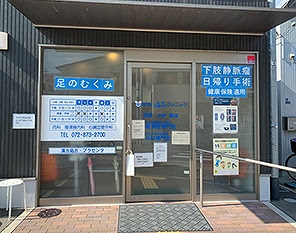
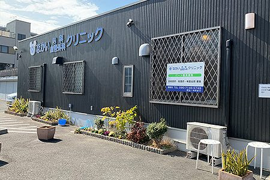
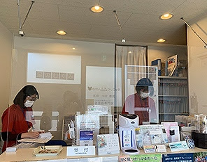

お知らせ
読み込み中...
コロナウイルス対策について
健康状態や患者様の意志に基づき、 任意でのマスク着用をお願い致します。
当院について
院長は循環器専門医です。
下肢静脈瘤・足のむくみ等の
エコー検査、日帰り手術や、
循環器疾患
（高血圧・不整脈など）の
診断・治療を得意としております。
生活習慣病・風邪・腹痛などの
一般内科診療にも対応しております。
特定健康診査（特定健診）、
各種がん検診
（大腸がん・肺がん・前立腺がん）、
肝炎ウイルス検査も
実施しております。
お気軽にご相談ください。
院内紹介



診療時間
| 月 | 火 | 水 | 木 | 金 | 土 | 日 | |
|---|---|---|---|---|---|---|---|
|
午前 9:00〜12:00 |
● | ● | ● | - | ● | ● | - |
|
午後 16:00〜18:00 |
● | ● | ● | - | ● | - | - |
休診： 木曜・土曜午後・日曜・祝日
アクセス
- JR野崎駅から徒歩15分
- JR四条畷駅から近鉄バス 「東花園駅前行き」乗車、 「寺川」下車 徒歩2分
- JR住道駅から近鉄バス 「東花園駅前行き」乗車、 「寺川」下車 徒歩2分
- 専用駐車場あり